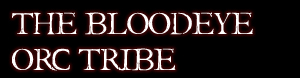

|

The Orc invasion may have been defeated, but from the ashes a new threat
arrived; the Bloodeye Orc Tribe. They had one purpose, and that was to take
the town of Cove for their own; enslaving its women, and slaughtering and
eating its men and children.
Return to Index
Structure
* Orc Chieftain
* Orc Warlord
* Orc Brute
* Orc Grunt
Role
The role of the Orcs is similar to that of the Bandits', in that it is created
as an enemy for the Baronship citizens and Militia. However, with two elements
for this purpose it also creates variety in enemy. In addition, the Orc element
also allows for the opportunity to roleplay with more evil aligned guilds
on a meaningful level.
Rules
* All Orc characters must be freshly created with a suitable name of Orcish
origin (some exceptions in the case of previously existing Orc's will be
considered).
* The player must be prepared to learn at least basic black speech mixed
with broken English.
* Powergaming on your Orc character is NOT allowed.
Join! Become an Orc!
Send a pigeon to this number, 284-429-275, containing the following
information;
* Character name.
* Character details (age, race (Forest or Cave Orc), former occupation,
etc).
* Skills.
* Why you wish to be a member of the Orc element.
Close Window |